Introduction
This EGSnrc application calculates  , the average kinetic energy fraction lost to radiative events for primary photon interactions (radiative loss fraction) or the radiative yield Y in the case of charged particle beams as they slow down. For photons, quantities such as kerma, , collision kerma, 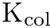, energy-fluence-averaged mass energy-transfer coefficient, 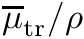, and mass energy-absorption coefficient, 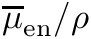, are also calculated for the incident photons.
, the average kinetic energy fraction lost to radiative events for primary photon interactions (radiative loss fraction) or the radiative yield Y in the case of charged particle beams as they slow down. For photons, quantities such as kerma, , collision kerma, 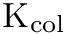, energy-fluence-averaged mass energy-transfer coefficient, 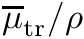, and mass energy-absorption coefficient, 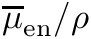, are also calculated for the incident photons.
The g application was written by Iwan Kawrakow in the late 90's using the Mortran 3 language, well before a C/C++ interface was available. Important contributions and refinements were made by Dave Rogers in the early 2000's. Version 1.0 was released in January 2000 for the calculation of the average radiative fraction or the radiative yield Y. Later on, in March 2002, the code was extended to compute total and collision kerma (version 1.1). In the summer of 2002 the calculation of average mass-energy transfer and absorption coefficients was added (version 1.2) and a bug corrected to properly account for fluorescent photons(version 1.3). The value used during the 2003 update of the Canadian Co-60 air kerma primary standard was calculated with this code. It was first released as part of EGSnrc in 2004 and has since been maintained by the EGSnrc Monte Carlo group at the NRC and the Carleton Laboratory for Radiotherapy Physics (CLRP).
Motivated by the need to generate databases of mass-energy absorption coefficients for EGSnrc applications that allow calculating collision kerma, a photon-beam-only calculation (calculation type = 1) was implemented in April 2006. With this calculation type the efficiency of 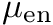 calculations is increased significantly. For instance, an efficiency increase of about a factor of 70 is obtained for a 600 keV calculation in air. At around the same time, the ability to run the calculation for more than one energy on a linear or a logarithmic energy grid was added. Since the code calculates  and
and  values, databases for calculating collision and total kerma can be generated.
values, databases for calculating collision and total kerma can be generated.
In January 2017, version 1.4 introduced refinements to the AUSGAB routine which combined with several changes in EGSnrc allow proper classification of sub-threshold events as either radiative or non-radiative during atomic relaxations following photoeffect, Compton scattering, and electron impact ionization (EII). According to this scheme, sub-threshold relaxation Auger electrons following photoeffect or Compton scattering are added to the kerma calculation (non-radiative) and sub-threshold relaxation fluorescent photons after EII are included as part of the energy lost to radiative events. An exhaustive discussion of these issues can be found in a detailed paper by Rogers and Townson (Med.Phys.46 2019). Version 1.5 fixes a bug in the calculation of for both calculation types when the photon energy is sampled from an energy spectrum. It also provides a cleaner output and an option for more verbose output. The code has been extensively documented and a Doxygen based user's manual created.
In the current version (1.6) the original algorithm of a calculation type 1 has been slightly adjusted to ensure is calculated to a user-requested relative precision  and it has been made independent of the number of histories. The target statistical precision now defaults to 1%. The possibility to further optimize
and it has been made independent of the number of histories. The target statistical precision now defaults to 1%. The possibility to further optimize calculation type 1 in the megavoltage energy range is introduced. The calculation progress messages during a type 1 calculation were made clearer and the documentation has been updated to reflect these changes.
Calculation method
A description of the physical quantities and the equations used for their calculation is presented in this section. Most of these definitions can be found in basic radiation physics textbooks, hence users more interested with practical aspects of using the code can skip to the next section Calculation types.
Although this app uses the variable g to refer indistinctively to both the radiative yield for charged particles, Y, and the radiative fraction for photons, , these quantities are conceptually different. Radiative yield is defined as the fraction of a charged particle's kinetic energy lost to radiation as it slows down in a medium, while radiative fraction is defined as the average fraction of a photon's kinetic energy transferred to charged particles and subsequently lost to radiation as these charged particles slow down in the medium. The radiative fraction can be obtained from the integration of Y(E) over the secondary electron spectrum.
- Note
- Particle production thresholds and transport cutt-offs should be set to the 1 keV low energy limit in EGSnrc (PCUT=AP=0.001 MeV, ECUT=AE=0.512MeV) to avoid potentially significant accuracy losses.
Radiation yield
Radiation yield Y( 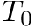) of a charged particle is defined as the fraction of its initial kinetic energy emitted as electromagnetic radiation through the slowing down process of that particle in a medium. For light charged particles, bremsstrahlung, fluorescence after impact ionization and in-flight annihilation (in the case of positrons) are the interactions responsible for the emission of electromagnetic radiation.
For the calculation of Y, the g application follows a number of charged particles with energy starting from the origin (0,0,0) with initial direction along the positive z-axis (0,0,1) as they travel across an infinite geometry filled with a user-defined medium. 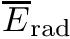, the average energy radiated by these particles as they slow down in the medium is scored to compute Y using the expression
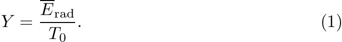
In addition to Y, the application also outputs 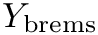, the radiative yield due to bremsstrahlung events to assess the approximation incurred when ignoring all other interactions as has been customarily done in the past.
Scoring algorithm for charged particle sources
- Charged particle transport starts at the origin of an infinite geometry filled with a user-defined medium and the charged particles are followed as they slow down in the medium until their energy falls below the transport cut-off energy ECUT.
- The average initial energy of charged particles is scored in 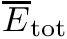. In the case of a monoenergetic source of energy , = , while for a spectrum 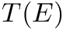, = 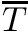, the average spectrum energy.
- Radiative photons (bremsstrahlung, annihilation photons, fluorescent photons after EII) are immediately discarded after their energy is scored as part of .
- Energy of sub-threshold fluorescent photons after EII are scored as part of .
Radiative fraction, mass energy transfer and absorption coefficients
A derivation of the equations used in the g application for the calculation of several physical quantities for photon beams is presented here. Expressions for monoenergetic beams are first derived, followed by a generalization to polyenergetic sources. A summary at the end of the section details the general scoring algorithm for photon sources.
Monoenergetic beams
The mass energy transfer coefficient, for a monoenergetic photon beam of energy E can be calculated using
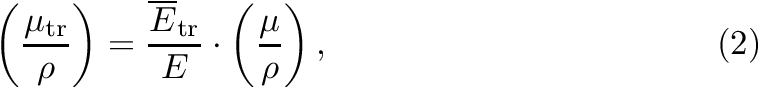
which follows from the definition of , and where 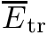 is the average photon energy transferred to charged particles after photon interactions (photoelectric, Compton, and pair production), and  is the mass attenuation coefficient for a photon of energy E.
is the mass attenuation coefficient for a photon of energy E.
The mass energy absorption coefficient for photons of energy E, , is defined as the non-radiative part of and can be calculated using the expression
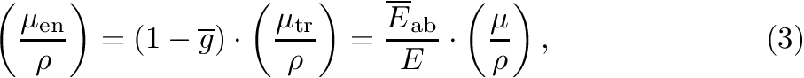
where 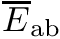 is the average fraction of absorbed in the medium and the average fraction of energy lost to radiative events.
is obtained as the ratio of the average energy lost to radiative events as the electrons slow down in a medium, 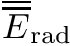, to :
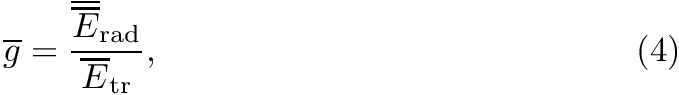
where
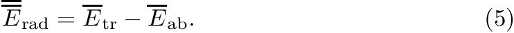
The estimation of follows the approach described in section above for obtaining radiation yield, Y, however averaging is over all secondary charged particles.
Once the coefficients are known, kerma per unit fluence is obtained as
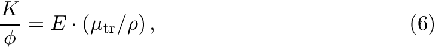
and similarly, collision kerma per unit fluence is given by
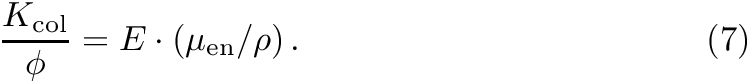
Polyenergetic beams
In the case of a polyenergetic source of photons, the definition of follows from the definition of kerma and collision kerma. Kerma per unit fluence is defined by
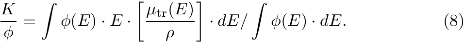
The right-hand side of Eq.( 8 ) can be interpreted as the energy fluence weighted average of times the fluence averaged spectrum energy or equivalently, as the fluence weighted average of the product of photon energy E and :
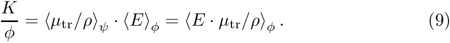
Similarly, substituting 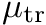 with , collision kerma per unit fluence is given by
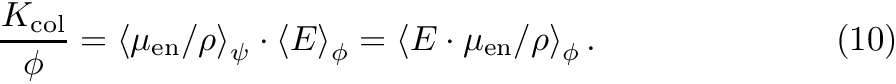
Eqs. ( 9 ) and ( 10 ) are generalizations of Eqs. ( 6 ) and ( 7 ) for polyenergetic sources. As in the case of monoenergetic beams, collision kerma and kerma are linked via the relationship
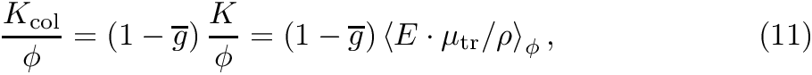
thus defining as the fraction of energy transferred by all photons to electrons, lost to radiative events. With this definition the expression for becomes
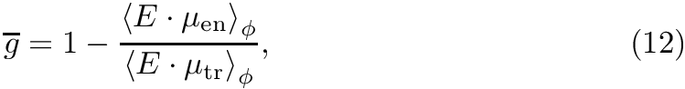
which from Eqs. ( 2 ), ( 3 ) and ( 5 ) is equivalent to
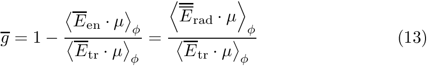
Eq. ( 13 ) generalizes the expression for obtained in the monoenergetic case (Eq. 4 ) and is the expression used to compute .
The energy fluence weighted average 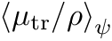 is computed using the expression
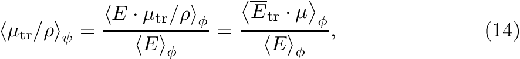
and the energy fluence weighted average 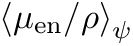 with
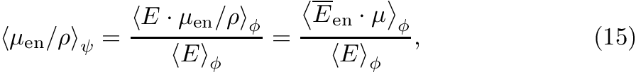
or alternatively using

from which kerma and collision kerma per unit fluence are calculated using Eqs. ( 9 ) and ( 11 ) respectively.
Scoring algorithm for photon sources
- Initial photons are placed at the origin of an infinite geometry filled with a user-defined medium.
- All photons, primaries and secondaries, are discarded after an interaction
- The photon energy transferred to charged particles after these interactions is scored to estimate .
- After atomic relaxations only energy transferred to charged particles (Auger or Coster-Kronig) is scored as part of .
- Fluorescence photons from atomic relaxation events after electron impact ionization (EII) are classified as part of the radiative loss.
- Radiative photons (bremsstrahlung, annihilation photons, fluorescent photons after EII) are immediately discarded after their energy is scored as part of .
- Electrons are followed as they slow down in the medium until their energy falls below the transport cut-off energy ECUT.
- Special attention is paid to sub-threshold relaxation particles:
- Energy of sub-threshold Auger electrons after Compton or photoeffect is scored as part of .
- Energy of sub-threshold fluorescent photons after EII are scored as part of .
- Energy of vacancies below an energy defined by the internal parameter
$RELAXCUTOFF, set to 1 keV by default, is treated as if deposited by Auger electrons. This is an approximation which is reasonable accurate. See the paper by Rogers and Townson (Med.Phys.46 2019) for a detailed discussion.
Calculation types
In its default implementation, the g code loops over a fixed number of histories for a source of photons or charged particles sampling the initial particle parameters and invoking the electromagnetic shower routine. This calculation can be explicitly requested by setting the calculation type input to 0. Collision kerma is calculated using Eq.( 10 ) and the energy fluence averaged mass energy absorption coefficient is calculated using Eq.( 15 )
A calculation type 1, for use with photon sources only, is tailored to the efficient calculation of the mass energy absorption coefficient . In this mode the g application takes advantage of the faster convergence of and 1- (when is small) to a desired statistical precision and collision kerma is calculated with Eq.( 11 ) and the energy fluence averaged mass energy absorption coefficient is calculated using Eq.( 16 ). The calculation finishes as soon as a user-requested relative uncertainty is reached, which by default is set to 0.01 (1%). For this calculation type the number of histories input entry is ignored. By default is calculated to a precision of 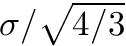 and 1- of 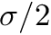, respectively, ensuring the precision in will be . This approach can be modified for instance to speed up the calculation at higher energies as described in section Speeding up calculations above 1 MeV .
The advantage of using a calculation type 1, tailored to the efficient computation of , can be observed in Figure 1 where the efficiency gain of a calculation type 1 over type 0 as function of photon energy in air is quantitatively shown for the original and the current implementation. The main difference is that the current implementation guarantees that the uncertainty in is equal to or less than the user-requested value , while the original implementation computed to a statistical precision of 1.1 since was calculated to the user-requested precision and 1- to /2. Calculation type 1 can be 20 times more efficient in the kilovoltage range and up to 80 times more efficient around 1 MeV. The efficiency gains decrease abruptly above the pair production threshold.

The inputs for a calculation type can be anywhere in the input file and are not required to be placed between delimiters as is customary in most EGSnrc applications. An example of a calculation type 1 input block that should run until a 0.1% precision is reached is shown in the following code snippet:
Source definition
The input block for defining source parameters must be placed between start and stop delimiters. For instance, to define a monoenergetic source emitting particles of energy  , and charge 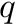, the input keys required are:
, and charge 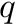, the input keys required are:
:Start Source Input: Incident Charge = q # 0 for photons -1 or 1 for e- or e+ INCIDENT SPECTRUM = mono-energy INCIDENT KINETIC ENERGY = E # in MeV :Stop Source Input:
Several individual energies can be requested by adding comma separated energy values:
:Start Source Input: Incident Charge = q # 0 for photons -1 or 1 for e- or e+ INCIDENT SPECTRUM = mono-energy INCIDENT KINETIC ENERGY = E1,...,EN # in MeV :Stop Source Input:
In this case the code will loop over individual calculations for each energy.
To generate a database of or values as function of energy, one can define a linear or a logarithmic energy grid. A linear (equidistant) energy grid is defined using the input keys
:Start Source Input: Incident Charge = q # 0 for photons -1 or 1 for e- or e+ INCIDENT SPECTRUM = mono-energy-lin-range INCIDENT KINETIC ENERGY = Emin, Emax, deltaE :Stop Source Input:
where the input key deltaE defines the bin width defining a grid of energies: 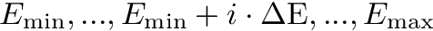
Similarly, a logarithmic energy grid is defined using the input keys
:Start Source Input: INCIDENT SPECTRUM= mono-energy-log-range INCIDENT KINETIC ENERGY= Emin, Emax, N :Stop Source Input:
where the logarithmic bin width 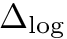 is obtained using
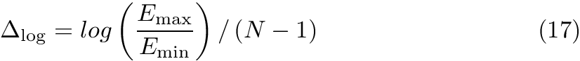
defining a logarithmic grid of N energy values
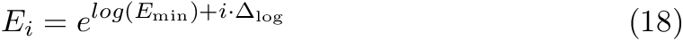
- Note
- These calculations will be limited to one CPU thread since there is no parallel execution capability in
g. As the energy increases, CPU time will also increase. If a computer cluster or multiprocessor PC is available, it is more efficient to perform these calculations individually by submitting them to the available CPU threads. A strategy for creating large databases is discussed below in section Building large databases.
A source of particles with a tabulated energy distribution (spectrum) can also be defined. A polyenergetic Co-60 beam is defined using the keys:
The format for spectrum files is described at the end of section 2.7 of report PIRS-702, NRC User Codes for EGSnrc. Further examples of spectrum files can be found in EGSnrc's default spectrum location:
$HEN_HOUSE/spectra/egsnrc/
Usage
The EGSnrc application g can be started from the command line using
g -i input_file [-p pegs_file] [-o output_file] [-b]
where the arguments in square brackets are optional. When the g application is run interactively, results of a calculation are written to standard output. If one wants to print the results of an interactive calculation to an output file, one can redirect the output to a file using
g -i input_file [-p pegs_file] > output_file
On Linux, one can make use of the tee command to route the results to multiple outputs (standard and a file) :
g -i input_file [-p pegs_file] | tee output_file
- Note
- Beware of overwriting an existing file!
Optional arguments
-
With the
-boption one specifies abatchrun, i.e. the output is redirected tooutput_file.egslog. -
If material information is obtained via a PEGS4 data file, the option
-ptells the application which file to use. Alternatively, materials can be defined in the input file via a media definition input block, in which case this option must be omitted. -
With the
-ooption one can change the name of the output files (by defaultinput_file.xxxis used, wherexxxis.egslog for the log file,.egsdat for the data file, etc.).
Remember that any application can be executed from the EGSnrc GUI egs_gui!!!
Input example: Monoenergetic 30 keV photon beam
Building large databases
A consequence of not having an option for parallel execution is that lengthy calculations cannot be run on multiple cores, for instance on a computer cluster or a multicore processor PC. This limitation makes the creation of large or databases spanning an energy range from threshold up to several MeV very time consuming. As the energy of the initial particle increases, more energetic electrons are created which have to be followed in an infinite geometry until they have lost all their kinetic energy. It is hence more practical to submit individual type 1 calculations for each energy. Furthermore, one can take advantage of the energy dependence of the mass energy transfer and absorption coefficients and use a logarithmic energy grid to reduce the number of high energy data points.
A simple Bash script is provided here as an example of what one could do to submit multiple calculations on a logarithmic energy grid. By default it runs type 1 calculations in air for 10 energies between 1 keV and 1 MeV on a logarithmic energy grid in the available cores of a PC. Precision is set to 0.1%. Water is also available and further media can be added to the media definition block of the input file template. By passing different arguments a user can change certain parameters of the simulations. It would be simple to modify the script to allow other parameters to be changed.
Speeding up calculations above 1 MeV
As the energy of the photons increases over the pair production threshold, more high energy charged particles are produced and computing 1- down to /2 becomes increasingly time consuming. To reduce the calculation time in this energy range, one could calculate 1- to a higher uncertainty and correspondingly to a smaller uncertainty so that the statistical precision of remains . Further optimization of a calculation type 1 in the megavoltage energy range is possible by modifying the target uncertainty in and 1- according to the relationships:
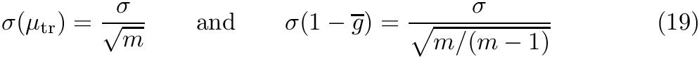
which guarantee a user-desired precision in and where m = 2, 3, 4, .., etc. The efficiency gain of a calculation type 1 over a type 0 in air as function of energy is shown in figure 2 for different m values. A value of m = 2 is recommended for calculations around 1 MeV.

The input key for modifying m is precision balance as shown in the input block example below
Note that omitting m or setting m = 1 invokes the default approach.
CVS log history
The g app was ported to the multiplatform EGSnrc system in 2004 and placed under revision control using the Concurrent Versioning System (CVS). The CVS log messages until EGSnrc was moved to the Git distributed version control system in 2015 are included verbatim below for reference:
RCS file: /home/cvsroot/HEN_HOUSE/user_codes/g/g.mortran,v
Working file: g.mortran
head: 1.6
branch:
locks: strict
access list:
symbolic names:
port-to-git: 1.6
export-to-git: 1.6
Rio-egsnrc-course: 1.6
V4-2-3-2: 1.6
beam2009course: 1.5
V4-r2-3-0: 1.5
beam2007course: 1.5
beam2007: 1.5
V4-r2-2-5: 1.5
beam2006course: 1.5
V4-r2-2-3: 1.3
beam2006: 1.3
V4-r2-2-2: 1.3
oz-course-2005: 1.3
V4-r2-2-1: 1.3
V4-r2-2-0: 1.3
egs-course-2005: 1.3
V4-r2-0-0: 1.2
keyword substitution: kv
total revisions: 6; selected revisions: 6
description:
----------------------------
revision 1.6
date: 2010/02/17 19:04:40; author: mainegra; state: Exp; lines: +20 -8
- Described the new calculation type = 1 which is much more efficient.
- Improved messages describing the calculation.
- Message about stopping calculation when a desired accuracy is reached only
applies to calc type = 1.
----------------------------
revision 1.5
date: 2006/04/18 20:01:38; author: mainegra; state: Exp; lines: +150 -19
- Added ability to run the calculation for more than one
energy. One can now enter individual energies, or request
linear or log energy grids. Useful for fast calculations,
but unpractical for very long calculations.
We should update the header of g.mortran to remind us of
the latest changes ... will do it soon ...
----------------------------
revision 1.4
date: 2006/04/07 16:14:43; author: iwan; state: Exp; lines: +159 -23
Implemented a type=1 calculation that can run until a
prescribed accuracy is reached.
In a type=1 calculation mu_tr is calculated first, then
mu_en is obtained from mu_en = mu_tr*(1-g), where g is
the fraction lost to radiation from slowing down electrons.
The advantage is that when g is small, mu_en converges much
faster to the prescribed accuracy compared to a type=0
calculation. We needed this to be able to obtain mu_en
tables more quickly than before.
----------------------------
revision 1.3
date: 2005/02/25 16:09:07; author: iwan; state: Exp; lines: +12 -1
Count radiative losses due to fluorescence after
EII.
----------------------------
revision 1.2
date: 2005/01/05 13:33:43; author: iwan; state: Exp; lines: +14 -4
Added a proper header.
----------------------------
revision 1.1
date: 2004/11/26 22:34:47; author: mainegra; state: Exp;
We had forgotten to port the little g code to the new system.